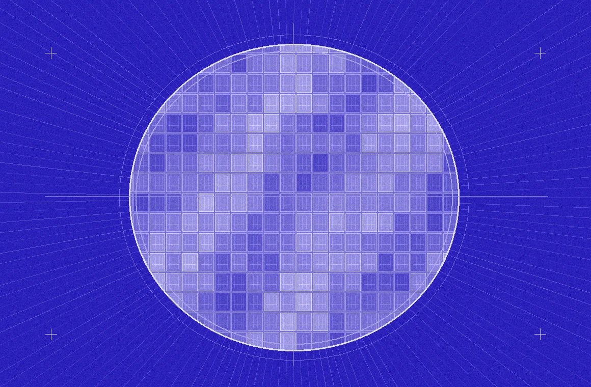

Education
B.Tech. in Electronics and Communication Engineering
Semiconductor and VLSI Design
I’m exploring how chips are designed and building my foundation in electronics. I’m open to internships and work opportunities where I can learn through practical experience.
Exploring how to reduce power consumption while meeting performance goals.
Learning how transistors and circuits are arranged on a chip, and how layout affects area, speed, and power.
Building a foundation in logic design, circuit simulation, and verification.
Semiconductor and VLSI Design
Project details will be added as the work develops.

Chip design and verification projects I’d like to build.
Build a counter in Verilog and compare simulated switching activity with and without a clock enable.
Implement a small subset of RV32I instructions and verify the core with short test programs.
Build a fixed-point multiply-accumulate block and check its outputs against a Python reference.
C, C++, Python, JavaScript
Malayalam, English, Hindi
I run AI models and agents on my computer. I’m interested in how agents can use tools, handle tasks with multiple steps, and support everyday work.
I use Ollama to run and experiment with different models locally.
I use Hermes Agent, Meden, and OpenClaw to explore how different agents fit into my workflows.
Companies where I’d like to explore opportunities in chip design and verification.